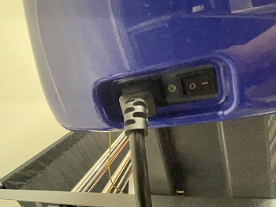
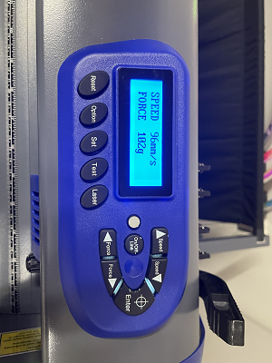
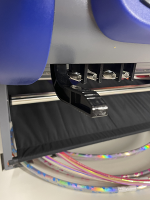
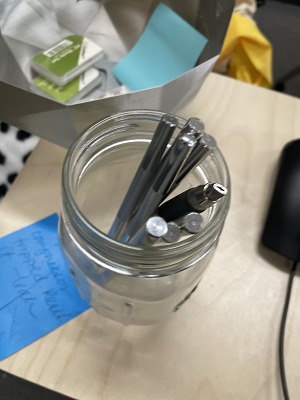
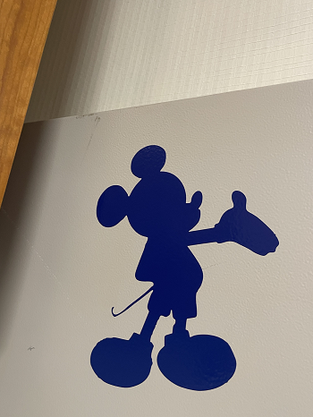
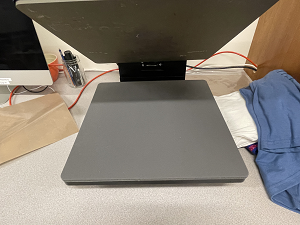
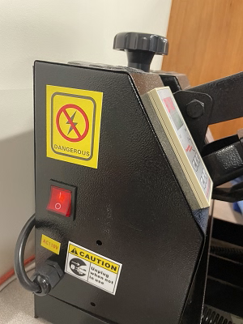
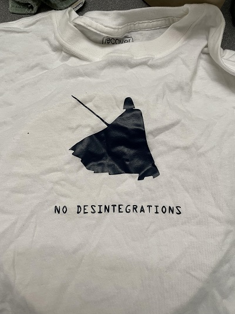
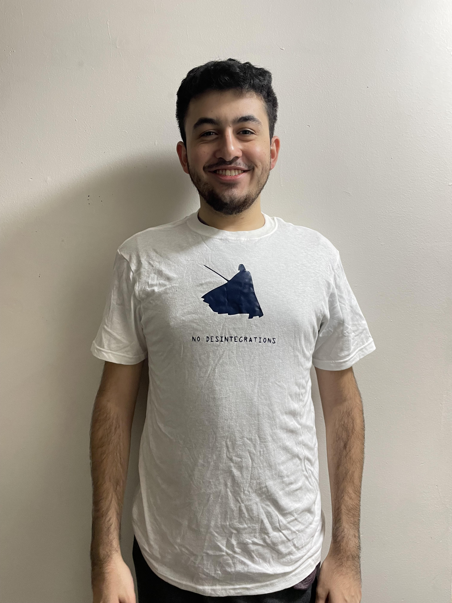

This week we'll be switching it up by cutting vinyl stickers out of different fabrics.
Much like the 3D printers we've used thus far, vinyl cutting is a form of digital fabrication available at the Fiber Lab.
Although the process does not physically print materials, it still incorporates parametric design to form an object out of specific materials.
Since raster images are composed of individual pixels, we will use vector images for this week's project.
Vectors use mathematical equations to create shapes, allowing the vinyl cutter to follow a specific path when separating our designs from the vinyl material.

I turned on the machine with the power button.

Then I adjusted the settings to match the material I cut into.

I locked the material into place using this lever.

After the blade separated the design from the stock, I detached it with an X-Acto knife.

(Here is my first draft that I made during training)


I placed my new draft onto the press and powered the machine.

Then I simply pressed the vinyl design onto my shirt.
After about 10 seconds, the material transfered onto my shirt.

Here is the finaly product.
I chose to use a Darth Vader sticker and quote because the vinyl cutter reminded me of the way lightsabers easily cut through materials in the Star Wars franchise.